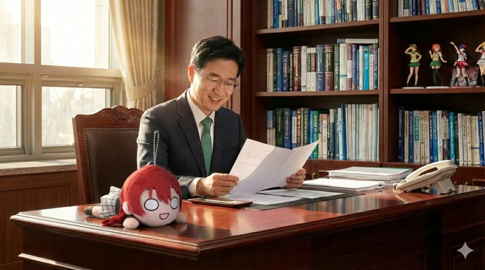

"효빈의 지성을 대표하는 젊은 리더이자, 덕업일치를 이룬 성공한 덕후의 표본."
대한민국의 교육자이자 효빈대학교의 제26대 총장. 전공은 사회복지경영학이다.
2021년, 40대 중반(만 44세)이라는 파격적인 나이에 국립대 총장으로 취임하여 학계를 놀라게 한 인물이다. 박효빈 시장의 대학 시절 은사이자 정신적 지주이며, 효빈시의 핵심 정책인 '문화(HAF)-복지 상생 모델'을 이론적으로 정립한 장본인이다. (사실 박효빈 시장과는 사석에서 최애캐 토론을 하는 사이라고 한다.)
엄격하고 보수적인 국립대 총장의 이미지를 탈피하여, 집무실에 네소베리를 전시하거나 훈화 말씀에 애니메이션 명대사를 인용하는 등 남다른 '덕력(Virtue/Otaku Power)'을 과시한다. 이러한 '성덕(성공한 덕후)' 면모는 학생들에게 친근감을 주어 폭발적인 지지를 얻는 원동력이 되고 있다.
1976년 5월 5일, 당시 덕빈북도 효빈시 남구 동곡동(현 효빈광역시 창전구 동곡동)의 평범한 가정에서 태어났다. 생일이 어린이날이라서 그런지 어릴 때부터 순수한 동심(?)과 함께 서브컬처에 눈을 떴다고 한다. (본인 주장에 따르면, 유치원 재롱잔치 때부터 애니메이션 주제가를 불렀다고 한다.)
지역 명문인 이엽고등학교를 우수한 성적으로 졸업했다. 당시 친구들의 증언에 따르면, 공부만큼이나 만화와 애니메이션 분석에 열을 올리던 독특한 학생이었다고 한다. 야간자율학습 시간에 문제집 사이에 일본 원서 만화책을 끼워 놓고 보다가 선생님께 걸리자 "제2외국어 심화 학습 중입니다"라고 뻔뻔하게 둘러댔다는 전설이 전해진다.
이후 효빈대학교 사회복지학과에 수석으로 입학하여 학사, 석사, 박사 과정을 모두 모교에서 마친 '성골 효빈맨'이다. 박사 과정 시절, "사회복지 조직에도 기업가 정신과 문화적 스토리텔링이 필요하다"는 내용의 논문으로 학계의 주목을 받았다. (논문 참고문헌에 서브컬처 관련 서적이 섞여 있었다는 전설이 있다. 실제로 논문 제목이 <가상 공동체(Fandom)의 정서적 유대가 사회적 자본 형성에 미치는 영향>이었는데, 예시 데이터가 아이돌 팬덤 분석이었다고...)
박사 학위 취득 직후인 30대 초반에 모교 교수로 임용되는 기염을 토했다. 이는 국립대 인사 시스템상 매우 이례적인 일로, 그의 연구 성과와 실무 능력이 얼마나 압도적이었는지를 방증한다. (면접 당시 너무 긴장한 나머지, 오하라 마리의 대사 "It's joke!"를 시전해 면접관들을 빵 터뜨리고 합격했다는 카더라가 있다.)
강단에서는 딱딱한 이론 대신 서브컬처 사례를 접목한 파격적인 강의로 수강 신청 전쟁을 일으켰다. 강의계획서에 대놓고 "Aqours의 폐교 저지 투쟁을 통해 본 지역 사회 운동의 한계와 가능성" 같은 주제가 올라올 정도였다.
박효빈 시장도 이때 수강신청에 성공해놓고 덕질 얘기만 하다가 A+를 받았다고 한다. 물론 사례 분석을 애니랑 결합한거라 그런거라고. 당시 박효빈 학생은 답안지에 "진정한 복지는 나카스 카스미의 귀여움에서 온다"는 취지의 논술을 썼음에도, 민 교수가 그 논리적 타당성(?)에 감복하여 최고 학점을 부여했다는 일화는 효빈대 대나무숲의 전설로 남아있다.
탁월한 행정 능력을 인정받아 사회복지대학장을 거쳐, 2021년 3월 제26대 총장 선거에서 압도적인 득표율로 당선되었다. 취임 일성으로 "고립된 상아탑을 부수고, 연결된 광장으로 나아가겠다"고 선언하며 대학의 대대적인 혁신을 예고했다. 그리고 취임식 배경음악으로 은근슬쩍 러브라이브 OST를 깔아버리며 본색을 드러냈다.
민부선 총장의 교육 철학은 단순한 학문적 비전을 넘어, 본인의 '오시(최애)' 캐릭터들의 정신을 대학 경영에 접목한 덕업일치(德業一致)의 결정체이다. 크게 '내치(內治)의 베르데'와 '외치(外治)의 샤이니'로 나뉜다.
핵심 가치: 포용(Inclusion), 연결(Connection), 치유(Healing)
모티브: 엠마 베르데 (니지가사키 학원 스쿨 아이돌 동호회)
"학교는 경쟁의 장이 아닌, 구성원 모두가 서로를 보듬어주는 '마이 페이스(My Pace)'의 공간이어야 한다."
민 총장의 교육 철학은 '베르데(Verde, 초록)'로 요약된다. 이는 그의 '오시'인 엠마 베르데가 상징하는 '치유와 포용'에서 영감을 받은 것이다. 그는 대학이 단순한 지식 전달소를 넘어, 지역사회의 아픔을 치유하고 다양한 구성원(유학생, 지역 주민, 소외 계층)을 하나로 연결하는 허브가 되어야 한다고 믿는다.
이 때문에 학교의 슬로건도 "Evergreen Hyobin(늘 푸른 효빈)"으로 정했다. (누가 봐도 엠마의 솔로곡 제목에서 따온 것 같지만 공식적으로는 부인하고 있다.)
핵심 가치: 도전(Challenge), 글로벌(Global), 부유함(?)
모티브: 오하라 마리 (Aqours)
"현실에 안주하지 말고, 세계를 향해 'Lock on!' 하는 진취적인 인재를 육성한다."
한편, 대외적인 대학 발전 전략으로는 '샤이니(Shiny)' 비전을 내세운다. 이는 그의 또 다른 오시인 오하라 마리의 거침없는 추진력과 글로벌 마인드를 본받자는 취지다. 실제로 총장 취임 후 해외 교환학생 지원금을 대폭 증액하고, 학교 축제 예산을 "It's not joke!" 수준으로 늘려버렸다.
결과적으로 효빈대학교는 엠마의 따뜻함으로 내부를 결속하고, 마리의 화려함으로 외부 경쟁력을 높이는 독특한 '양날개 오타쿠 리더십'을 갖추게 되었다.
효빈대학교는 개교 이래 탄탄한 재정과 우수한 입결을 자랑하는 지거국(지방거점국립대) 탑티어였으나, 다소 보수적인 학풍이 단점으로 지적되곤 했다. 민부선 총장은 취임 직후 이러한 정체성을 타파하고 '문화 융합 선도 대학'이라는 새로운 비전을 제시했다.
그는 인근의 고판대학교가 재단 비리(이른바 이 교수 사건)로 혼란을 겪으며 몰락하는 것과 대조적으로, 투명하고 공격적인 투자를 감행했다. 이 교수는 민 총장 발끝도 못 따라간다는 게 학계의 정설. 특히 그의 '오시'인 오하라 마리가 보여준 "돈으로 해결할 수 있는 건 돈으로 해결한다(?)"는 마인드를 벤치마킹하여, 학교 재정을 서브컬처 인프라 구축에 쏟아부었다.
구체적으로 HAF(효빈 애니메이션 페스티벌) 조직위원회와 전면적인 협약을 맺고, 관련 학과 신설 및 커리큘럼을 개편하여 '덕업일치'형 인재를 양성하는 데 주력했다. (교양 과목으로 '러브라이브로 배우는 지역사회학'이 개설되었을 때 교육부가 감사에 나올 뻔했으나, 수강생 만족도가 100%라 넘어갔다고 한다.) 그 결과 효빈대는 최근 3년간 입시 경쟁률과 취업률에서 역대 최고치를 갱신하며 '지거국의 혁명'으로 평가받고 있다.
교내 유휴 부지를 활용하여 최첨단 복합 문화 시설인 '베르데 홀(Verde Hall)'을 건립했다. 이는 그의 교육 철학이 물리적으로 구현된 공간이자, 사심이 가득 들어간 건축물이다.
사건: 2024년, 재학생 A씨가 '엠마의 빵' 파괴 미수, 트램 난동, 니나관 행패 등 교내외에서 혐오 범죄를 저지름.
대응: 민 총장이 직접 징계위원회에서 '영구 제적(추방)' 처분을 내림.
"A군의 행동은 '고립'을 자초하고 '치유'를 거부했습니다. 우리 대학에 혐오가 설 자리는 없습니다."
평소 온화한 'ENFJ' 성품의 민 총장이지만, A씨가 하필이면 '엠마의 빵'이라는 나눔과 연결의 상징(이자 본인의 최애 굿즈)을 훼손하려 하자 그야말로 격노했다고 전해진다.
당시 징계위원회에 참석한 관계자에 따르면, 민 총장은 A씨가 "이 학교는 오타쿠 소굴"이라며 반발하자, 차갑게 웃으며 다음과 같이 일갈했다고 한다.
"자네가 부정한 것은 오타쿠 문화가 아니라, 타인을 이해하려는 마음(Heart) 그 자체네. 엠마의 빵은 배고픈 이들을 위한 사랑이었어. 그 사랑을 짓밟은 자에게 줄 졸업장은 우리 학교에 없네."
결국 그는 "다양성을 부정하고 혐오를 퍼트리는 자는 지성인의 자격이 없다"며 단호하게 퇴출을 명령, 학생들의 안전과 학교의 가치(와 본인의 덕심)를 지켜냈다.
민 총장은 취임 직후 "학생들이 굶는 것은 엠마 베르데의 정신(치유와 포용)에 어긋난다"며 교내 식당과 기숙사 복지를 대대적으로 개선했다. 이는 단순한 포퓰리즘이 아닌, '의식주가 안정되어야 학문도 가능하다'는 사회복지학적 신념의 발로였다.
오하라 마리의 'Shiny'한 도전 정신을 이어받아, 지방 대학의 한계를 넘는 과감한 산학협력 모델을 구축했다. 그는 "우리 효빈시는 단순한 지방 도시가 아니라, 서브컬처의 수도가 될 잠재력이 있다"며 지자체(박효빈 시장)와의 연대를 강화했다.
민 총장은 효빈대학교를 HAF의 단순한 장소가 아닌, 공식 학술·문화 본부(Zone 4)이자 공동 주관 기관으로 격상시켰다. 이 과정에서 대학 재정을 획기적으로 개선하여, 전국 대학 중 유일하게 '등록금 5년 연속 동결'을 선언하는 기적을 이뤄냈다.
물론 개혁 초기에는 일부 원로 교수들이 "신성한 상아탑에 어디서 더럽게 저급한 만화 따위를 들이느냐"며 거세게 반발하기도 했다. 그러나 민 총장은 오하라 마리 식의 '금융 치료'와 엠마 베르데 식의 '포용(을 가장한 고립)' 전략으로 이를 잠재웠다. 이들의 말로는 비참했다.
결과적으로 효빈대학교는 HAF를 통해 '재정 독립'과 '취업률 상승'이라는 두 마리 토끼를 잡았고, 민부선 총장은 "덕질이 곧 밥 먹여준다"는 것을 증명한 입지전적인 인물이 되었다.
효빈대학교 역사상 가장 끔찍했던 교내 권력형 성범죄 및 교권 남용 사태이자, 민부선 총장과 시연 사단의 압도적인 무관용 참교육이 폭발했던 전설의 대사건이다.
2023년, 투병 중인 아버지와 극단적으로 엇나간 동생 고하루를 홀로 부양하며 쓰리잡을 전전하던 고노애에게 끔찍한 비보가 날아들었다. 윤석열 정부의 '대학생 청소년 교육지원 사업' 통합 명목으로 국가 근로 시급이 무참히 삭감(12,500원 → 11,150원)된 것이다. 이로 인해 증발해 버린 연간 81만 원은 고노애에게 단순한 숫자가 아니었다. 아버지의 약값과 동생의 패악질을 막을 유일한 생명줄이었다.
이 사실을 확인한 고노애는 학생회실 창문을 깨부술 듯한 사자후("윤석열 이 개새끼야!!!!!!!!!!!")를 토해내며 짐승처럼 오열했다. 이를 지켜본 김시연은 이성의 끈이 완벽히 끊어진 '죽은 눈' 모드로 각성하여 정부 규탄 결의안을 작성했고, 강하애는 특유의 아재개그를 버린 채 국가 폭력의 실태를 차갑게 해부했다. 벼랑 끝에 몰린 고노애는 듀얼 프로필에 눈물겨운 '뿅망치 역공 짤'을 올리며 간신히 정신줄을 붙잡고 있었다.
설상가상으로 듀얼 프로필 공개 설정을 실수하는 바람에, 이를 목격한 극우 성향의 쓰레기 동기 조창렬이 마수를 뻗쳤다. 조창렬은 고노애의 합성 짤을 '국가원수 모욕죄'로 엮어 고발하겠다며 "나랑 하룻밤 자면 조용히 덮어주겠다"는 역겨운 성범죄 협박 문자를 날렸다.
극도의 공포에 질려 식음 전폐하던 고노애는 고깃집에서 친구들 앞에서 결국 무너져 내리며 모든 진실을 폭로했다. 친구들의 분노는 활화산처럼 터졌다. 유채나가 법리적 역고소 플랜을 짜는 가운데, 김시연은 "이 쓰레기 새끼, 내일 척추까지 접어버릴 테니까 넌 우리만 봐"라며 소름 끼치는 구원과 처단을 예고했다.
다음 날, 빈 대형 강의실로 고노애를 끌고 가 덮치려던 조창렬은 김시연의 완벽한 덫에 걸려들었다. 112 상황실 통화 연결과 함께 포위된 조창렬은 최후의 발악으로 고노애를 덮치려 했으나, 출동한 경찰의 테이저건(5만 볼트)을 가슴팍에 정통으로 맞고 거품을 물며 기절했다. 하지만 경찰서 혼절 직후 산소마스크를 벗어던지며 "나 이러면 이번 달 월급 깎인단 말이야!! 내 시급 내놔!!"라고 절규하는 고노애의 짠내 나는 생계형 본능은 친구들마저 아연실색하게 만들었다.
지옥은 여기서 끝나지 않았다. 조창렬의 헛소문만 맹신한 전공 교수 안농운은 고노애를 연구실로 불러 "옷차림이 천박해 수업에 집중이 안 된다. 매일 내 연구실을 청소하지 않으면 F를 주고 학교에서 매장하겠다"는 끔찍한 2차 가해와 권력형 성폭력을 자행했다.
가족의 생존줄(장학금)이 끊길 위기에 처한 고노애는 극도의 수치심과 공포에 내몰려 시냇가 대교 난간 위에서 투신을 시도했으나, 지나가던 고교 시절 은사(윤리 교사)에게 극적으로 구조되었다. 소식을 듣고 들이닥친 시연 사단에게 모든 진실을 털어놓은 이들은 즉각 대학 본부, 민부선 총장실로 진격했다.
사건 대응: 안농운 교수 즉각 파면 및 연구실 압수수색급 보복 감사, 가해 학생 3인방 영구 출교 조치 및 민형사상 철퇴.
"엠마가 말한, 푹신푹신한 세상을 감히 방해하는 쓰레기들은, 마리의 싸다구처럼 강력한 것으로 처분해야 마땅합니다." - 민부선
사연을 모두 들은 민부선 총장의 얼굴은 무섭게 굳어졌다. 그는 즉각 안농운 교수의 직위해제 및 고노애의 장학금 완벽 보장을 약속하며, "당신은 아무 잘못이 없습니다. 무거운 짐을 버텨낸 것은 훈장이지 부끄러움이 아닙니다. 학교가 당신의 가장 단단한 방패가 되어 주겠습니다."라며 따뜻하게 위로했다.
학생들이 나간 직후, 민 총장은 피도 눈물도 없는 철권통치자로 돌변해 비서실장과 교무처장을 호출하여 안농운의 연구실을 탈탈 털어버릴 무자비한 보복 감사를 지시했다. 사실 이 사건의 책임감에 자괴감을 느끼고 사직서를 쓰려 했으나, 펑펑 울며 만류하는 고노애와 학생들의 진심에 다시금 단죄의 칼을 빼들고 완벽한 심판자로 각성한 것이다.
불구속 수사로 풀려나 공원에서 난동을 피우다 주성우의 정당방위와 어깨 형님들의 참교육으로 진압당한 조창렬 사태 직후, 고노애의 섭식장애 트라우마가 터져 화장실에서 먹토를 쏟아내던 중 최악의 일진 가해자 이송윤과 전개욱이 난입해 성희롱을 쏟아내는 대환장 파티가 벌어졌다.
하지만 소주병을 거꾸로 치켜든 오이슬과 시연 사단이 쓰나미처럼 들이닥치며 이들을 완벽하게 제압했다. 전개욱이 "우리 아빠가 경찰 간부다!"라며 허세를 부렸으나, 신고를 받고 출동한 간부 애비는 김시연을 확인하자마자 사색이 되어 자기 아들의 뒤통수를 미친 듯이 후려갈기며 바닥에 넙죽 엎드려 자폭했다.
이송윤의 아빠(효빈일보 기자) 역시 "박효빈 시장이랑 스폰서 기사 한 줄 쓰면 끝난다"며 망발을 쏟아냈지만, 김시연의 서늘한 비웃음에 멘탈이 박살났다. 결국 그가 작성한 조작 기사는 데스크에서 '1초 킬(반려)' 당하며 징계 해고(파면)되었고, 조선일보 데스크에 전화를 걸었다가 과거 박효빈·김성민에게 영혼까지 털렸던 조선일보의 지독한 PTSD 발작 섞인 쌍욕만 듣고 멸문지화를 당했다.
대학 감사팀의 압수수색으로 안농운 교수의 연구비 횡령(5억 이상 특경법 위반)과 갑질이 낱낱이 까발려지며 그는 징역 30년형과 함께 파면되었다. 조창렬, 이송윤, 전개욱 역시 학생상벌위원회에서 단 1초의 망설임 없이 학칙상 최고 수위인 '출교(黜校)' 처분을 받으며 학적이 완벽히 말살되었다.
1심 법정에 선 세 찌질이는 "삽입 안 했으니 무죄다", "고소유가 뒤에서 조종했다"며 역대급 망언과 2차 가해를 쏟아냈다. 그러나 히카와 사요 오시인 하성휘 부장판사는 이들의 궤변을 서늘하게 박살내며 경합범 가중 원칙을 적용, 법정 최고형인 징역 12년 및 전자발찌 10년을 자비 없이 선고했다.
징역 12년을 받고도 2심에 가면 형량이 깎일 것이라 망상한 세 놈은, 항소심에서 지자체장, 총장, 국회의원, 교수까지 싸잡아 "좌파 카르텔 스폰서"라며 허위 비방을 생중계했다. 그러나 이들이 마주한 것은 이치가야 아리사 오시인 완벽주의 재판장이었다.
재판장은 "삽입 안 했으니 성범죄 아니라는 무지한 뇌피셜"과 "2심 감형 룰"이라는 망상을 팩트로 무자비하게 폭격하며, 원심을 파기하고 오히려 징역 15년으로 형량을 가중 선고했다. 더불어 법정 소란을 명예훼손 및 모욕으로 즉각 추가 기소하도록 명령했다.
자신과 소중한 멘티 고노애를 '스폰서' 관계로 날조했다는 법정 속기록을 받아든 박효빈 시장은 눈이 뒤집혔다. "내 모든 걸 걸고 아주 바닥 끝까지 찢어발겨 주겠어"라며 시청 고문 변호사를 총동원해 30억 원대 민사 소송과 전 재산 가압류를 지시했다. 김성민 의원, 민부선 총장, 은권규 교수 역시 합법적인 모든 권력을 동원해 이들에게 천문학적인 징벌적 손해배상 소송과 추가 형사 고발을 때려부었다.
대법원은 이들의 상고를 단 한 줄의 기각 판결로 뭉개버리며 징역 15년을 최종 확정 지었다. 이어진 별건 명예훼손 재판에서 4년이 추가되어 총 19년형이 확정되었고, 수십억 원의 민사 배상금으로 집안이 멸문지화 당하며 영치금조차 100% 압류당하는 완벽한 생지옥이 완성되었다.
2042년이 되어서야 40대 빈털터리 전과자로 출소하게 될 세 짐승과, 징역 30년으로 인생이 종 쳐버린 안농운. 교도소 가장 깊은 바닥에서 썩어가는 이들과 완벽히 대비되게, 고노애는 오랜 섭식장애와 K-장녀의 굴레를 훌륭히 극복하고 사회과학대학 부학생회장으로 당당히 비상했다.
그녀를 지킨 시연 사단의 친구들 역시 학계, 정계, 꿈을 향해 눈부시게 나아갔고, 민부선 총장을 비롯한 권력자들은 흔들림 없이 도시와 학교를 이끌며 이 찬란한 승리의 서사시를 완벽한 해피 엔딩으로 완성시켰다.
총장실에 들어가면 가장 먼저 보이는 것이 역대 총장들의 사진이 아니라, 책장 한편을 장식한 러브라이브! 시리즈 피규어와 굿즈라고 한다. (교육부 감사 나올 때만 블라인드로 가린다고 한다.)
[민부선]: "효빈대학교는 혐오와 고립을 가르치지 않습니다. 오늘부로 효빈의 지성은 당신의 사상을 영원히 추방합니다." (A씨 제적 징계위원회에서, 진정한 참교육)
[민부선]: "학생들의 말, 똑똑히 들었습니다. 교육자로서, 그리고 이 대학의 총장으로서 참담함을 금할 길이 없습니다. 학교가 당신의 가장 크고 단단한 방패가 되어 줄 테니, 이제 안심하고 푹 쉬어도 좋습니다." (총장실에 찾아온 고노애와 시연 사단에게)
[민부선]: "엠마가 말한, 푹신푹신한 세상을... 이 광활한 지식의 전당에서 감히 방해하는 쓰레기들은, 마리의 싸다구처럼 강력한 것으로 처분해야 마땅합니다. 절대 선처는 없습니다." (안농운 교수와 조창렬 일당에 대한 무자비한 보복 감사를 지시하며)
[민부선]: "내가... 내가 총장으로서 학생들을 제대로 지도하지 못했고, 저런 암세포 같은 놈들을 사전에 도려내지 못했어... 나는 더 이상 이 신성한 자리에 앉아있을 자격이 없다." (책임감을 느끼고 사직서를 쓰며, 이후 학생들이 만류하며 찢어버림)
[민부선]: "악질 독재 교육자?! 엠마가 바라는 따뜻한 학교를 만들려는 나를 모함한 것도 모자라, 피해 학생을 매장하려 들어?! 단 1원의 합의도 없는 강력 처벌 탄원서와 추가 명예훼손 고발장을 제출하십시오!" (항소심에서 자신을 모함한 조창렬 일당의 속기록을 보고 격노하며)
[민부선]: "그 빵은 단순한 밀가루 덩어리가 아닙니다. 도시의 온기이자 연결의 증거입니다." (엠마의 빵 사건 직후)
[민부선]: "박 군, 솔직히 말해보세요. 이 사례... 오하라 마리 아닙니까?" (2020년, 박효빈의 과제를 꿰뚫어 보며)그 교수에 그 제자다(...)
[민부선]: "Shiny하게 나아갑시다! 우리 대학의 미래는 에버그린(Evergreen)입니다!" (취임사 중, 교직원들이 단체로 웅성거렸다)

▲ "이것이 효빈의 지성(과 덕력)이다." - 집무실에서 업무 중인 민부선 총장